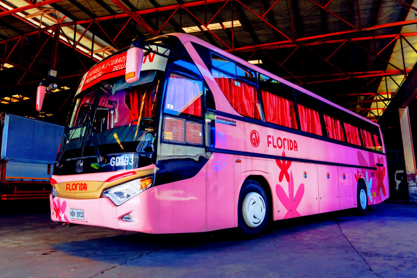

More about GV Florida Transport, Inc.

GV Florida Transport, Inc. is one of the leading bus companies operating in the Philippines, providing safe, comfortable, and reliable transportation services connecting Metro Manila to various destinations in Northern Luzon.
Our fleet consists of modern, well-maintained air-conditioned buses including Deluxe, Super Deluxe, and First Class units to ensure that every passenger enjoys a comfortable journey.
With terminals in Sampaloc, Manila, Kamias, Quezon City, and Cubao, Quezon City (operated by Dagupan Bus Company), we provide convenient access points for our passengers traveling to and from Cagayan Valley, Isabela, and other northern destinations.
Our commitment to safety, punctuality, and customer satisfaction has earned us the trust of thousands of travelers who choose GV Florida Transport for their transportation needs.
To be the leading and most trusted public land transportation company in the Philippines, recognized for our unwavering commitment to passenger safety, comfort, and service excellence, connecting communities across Luzon and beyond.
To provide safe, reliable, affordable, and comfortable bus transportation services to the traveling public. We are dedicated to maintaining a modern fleet, upholding the highest standards of professionalism, and continuously improving our services to exceed our passengers' expectations while fostering the growth and development of the communities we serve.
We put our passengers' safety, comfort, and convenience at the center of everything we do.
We maintain the highest standards of honesty and transparency in all our operations.
We continuously improve our services to exceed passenger expectations.